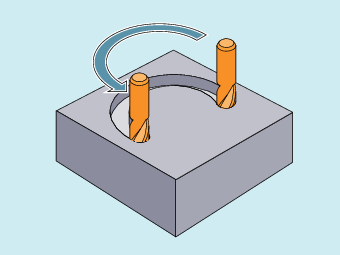

Circular interpolation enables the machining of full circles or arcs.
Application example: Milling a circular way
The control system offers various options of programming circular movements. This allows the user to implement almost any type of drawing dimension directly.
Circular interpolation with center point and end point (G2/G3, X... Y... Z..., I... J... K...)
Circular interpolation with radius and end point (G2/G3, X... Y... Z..., CR)
Circular interpolation with polar coordinates (G2/G3, AP, RP)
Circular interpolation with tangential transition (CT, X... Y... Z...)
The control needs the working plane parameter to calculate the direction of rotation for the circle (G2 is clockwise or G3 is counter-clockwise).
Exception:
It is also possible to create circles outside the selected working plane (not if the opening angle is specified). In this case, the axis identifiers that the programmer specifies as circle end point determine the circle plane.